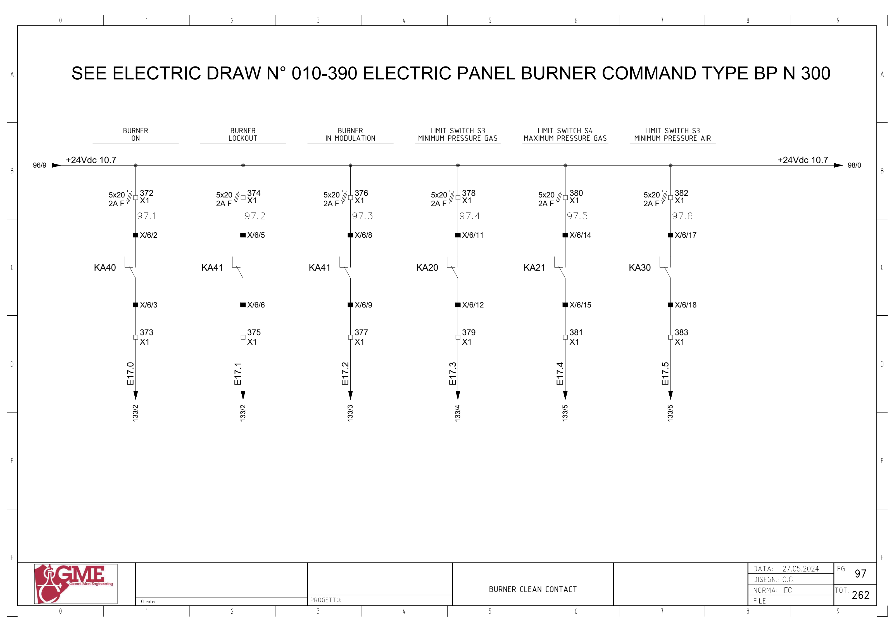
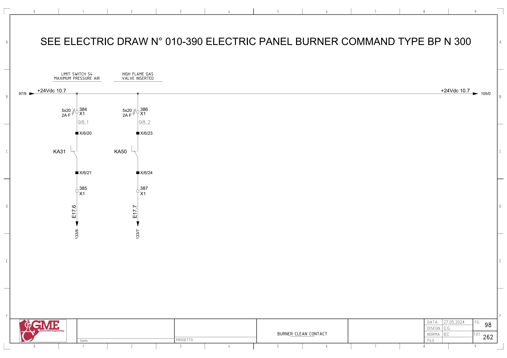
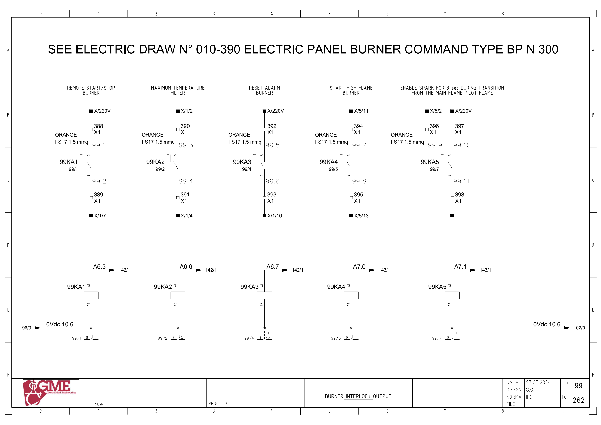
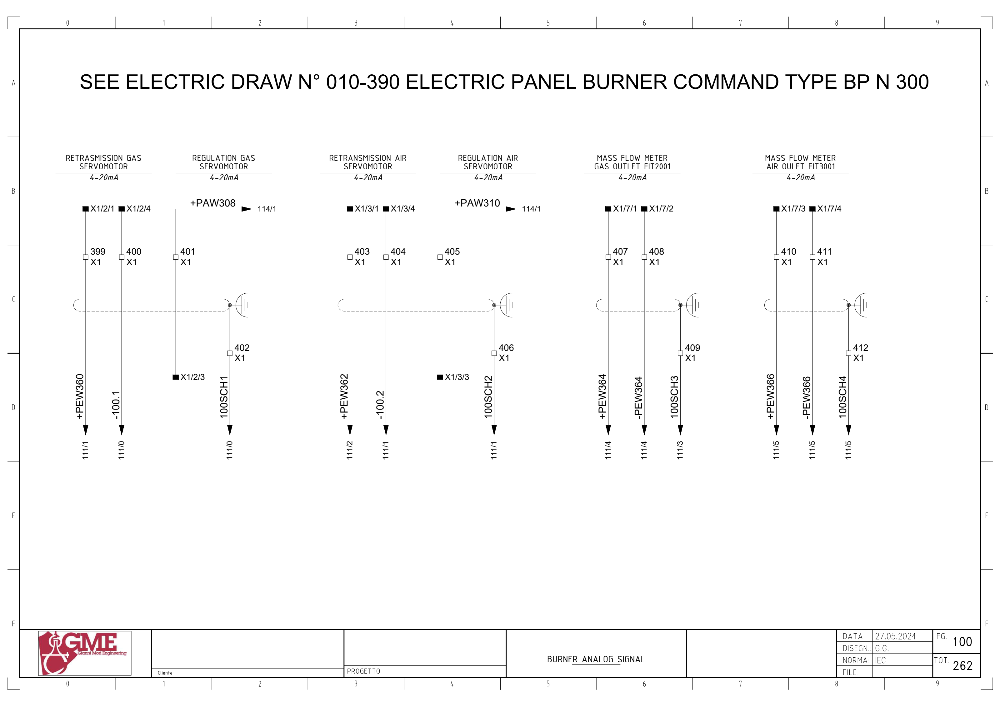
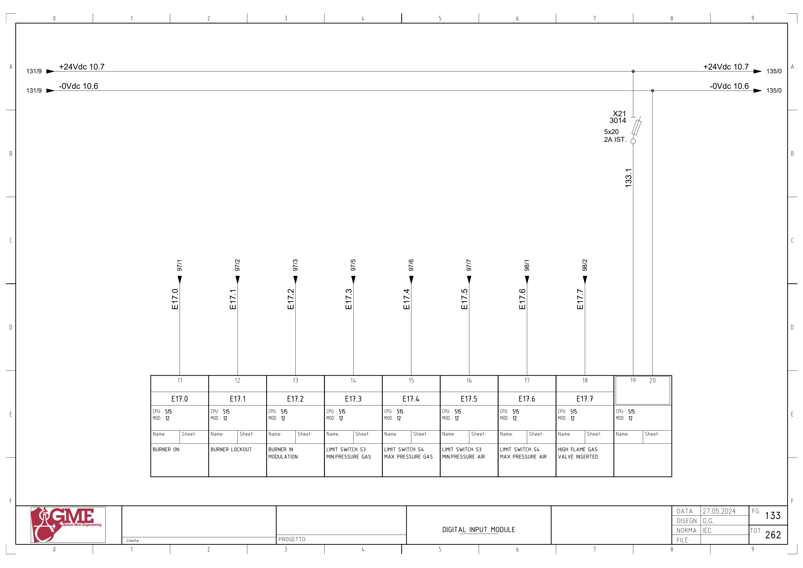

BR01 · 가스 버너 · 외부 제어 인터페이스 전기 회로 추적
1. 도면의 구성과 진단 경계
FG97/98의24V clean contact 입력8개, FG99의 릴레이 출력5개, FG100의4–20mA 아날로그6개를 추적합니다. 외부 버너반은 도면010-390 TYPE BP N300을 참조합니다.
이 자료는 GME PLC와 버너반 사이 인터페이스입니다. 내부 화염 감시·점화·퍼지·가스 밸브 보호·안전 시간의 전체 회로가 아닙니다. 시공도면의 BR01 간선 A–F를 개별 핀으로 자동 배정하지 않습니다.
추가 시공도면 · 접속함·케이블·배관 경로 — 승인·현재 설치는 확인 전입니다.
2. 버너 ON
E17.0 ↔ 백업 %I17.0 / burner on · FG97 · PDF 98
- +24Vdc10.7 → X1:372 / 2A F(5×20)
- 버너 전용반 X/6/2 → KA40 접점 → X/6/3
- X1:373 → E17.0 → FG133 MOD.12 단자11
전달·사용 위치: 원본1854·1865·1866·1868 등 버너 제어와 관련 원시/Inputs/알람의 전체 전달을 확인합니다. 도면 접점명과 PLC 이름을 별도로 기록합니다.
원본 심볼 직접 참조: 복원 LAD에서 이 이름의 직접 참조는 찾지 못했습니다. 내부 Inputs 등의 별도 전달·미해석 참조·현재 프로그램은 확인 전입니다.
3. 버너 LOCKOUT
E17.1 ↔ 백업 %I17.1 / brurner lock out · FG97 · PDF 98
- +24Vdc10.7 → X1:374 / 2A F(5×20)
- 버너 전용반 X/6/5 → KA41 접점 → X/6/6
- X1:375 → E17.1 → FG133 MOD.12 단자12
전달·사용 위치: 원본1854·1865·1866·1868 등 버너 제어와 관련 원시/Inputs/알람의 전체 전달을 확인합니다. 도면 접점명과 PLC 이름을 별도로 기록합니다.
원본 심볼 직접 참조: 1854 / burner control / ORef 166
4. 버너 IN MODULATION
E17.2 ↔ 백업 %I17.2 / burner on and ok · FG97 · PDF 98
- +24Vdc10.7 → X1:376 / 2A F(5×20)
- 버너 전용반 X/6/8 → KA41 접점 → X/6/9
- X1:377 → E17.2 → FG133 MOD.12 단자13
전달·사용 위치: 원본1854·1865·1866·1868 등 버너 제어와 관련 원시/Inputs/알람의 전체 전달을 확인합니다. 도면 접점명과 PLC 이름을 별도로 기록합니다.
원본 심볼 직접 참조: 1862 / burner control / ORef 480
5. 가스 최소 압력 접점
E17.3 ↔ 백업 %I17.3 / min pressure gas · FG97 · PDF 98
- +24Vdc10.7 → X1:378 / 2A F(5×20)
- 버너 전용반 X/6/11 → KA20 접점 → X/6/12
- X1:379 → E17.3 → FG133 MOD.12 단자14
전달·사용 위치: 원본1854·1865·1866·1868 등 버너 제어와 관련 원시/Inputs/알람의 전체 전달을 확인합니다. 도면 접점명과 PLC 이름을 별도로 기록합니다.
원본 심볼 직접 참조: 복원 LAD에서 이 이름의 직접 참조는 찾지 못했습니다. 내부 Inputs 등의 별도 전달·미해석 참조·현재 프로그램은 확인 전입니다.
6. 가스 최대 압력 접점
E17.4 ↔ 백업 %I17.4 / max pressure gas · FG97 · PDF 98
- +24Vdc10.7 → X1:380 / 2A F(5×20)
- 버너 전용반 X/6/14 → KA21 접점 → X/6/15
- X1:381 → E17.4 → FG133 MOD.12 단자15
전달·사용 위치: 원본1854·1865·1866·1868 등 버너 제어와 관련 원시/Inputs/알람의 전체 전달을 확인합니다. 도면 접점명과 PLC 이름을 별도로 기록합니다.
원본 심볼 직접 참조: 복원 LAD에서 이 이름의 직접 참조는 찾지 못했습니다. 내부 Inputs 등의 별도 전달·미해석 참조·현재 프로그램은 확인 전입니다.
7. 공기 최소 압력 접점
E17.5 ↔ 백업 %I17.5 / min pressure air · FG97 · PDF 98
- +24Vdc10.7 → X1:382 / 2A F(5×20)
- 버너 전용반 X/6/17 → KA30 접점 → X/6/18
- X1:383 → E17.5 → FG133 MOD.12 단자16
전달·사용 위치: 원본1854·1865·1866·1868 등 버너 제어와 관련 원시/Inputs/알람의 전체 전달을 확인합니다. 도면 접점명과 PLC 이름을 별도로 기록합니다.
원본 심볼 직접 참조: 복원 LAD에서 이 이름의 직접 참조는 찾지 못했습니다. 내부 Inputs 등의 별도 전달·미해석 참조·현재 프로그램은 확인 전입니다.
8. 공기 최대 압력 접점
E17.6 ↔ 백업 %I17.6 / max pressure air · FG98 · PDF 99
- +24Vdc10.7 → X1:384 / 2A F(5×20)
- 버너 전용반 X/6/20 → KA31 접점 → X/6/21
- X1:385 → E17.6 → FG133 MOD.12 단자17
전달·사용 위치: 원본1854·1865·1866·1868 등 버너 제어와 관련 원시/Inputs/알람의 전체 전달을 확인합니다. 도면 접점명과 PLC 이름을 별도로 기록합니다.
원본 심볼 직접 참조: 복원 LAD에서 이 이름의 직접 참조는 찾지 못했습니다. 내부 Inputs 등의 별도 전달·미해석 참조·현재 프로그램은 확인 전입니다.
9. 고화염 가스 밸브 삽입 응답
E17.7 ↔ 백업 %I17.7 / high flame gas · FG98 · PDF 99
- +24Vdc10.7 → X1:386 / 2A F(5×20)
- 버너 전용반 X/6/23 → KA50 접점 → X/6/24
- X1:387 → E17.7 → FG133 MOD.12 단자18
전달·사용 위치: 원본1854·1865·1866·1868 등 버너 제어와 관련 원시/Inputs/알람의 전체 전달을 확인합니다. 도면 접점명과 PLC 이름을 별도로 기록합니다.
원본 심볼 직접 참조: 복원 LAD에서 이 이름의 직접 참조는 찾지 못했습니다. 내부 Inputs 등의 별도 전달·미해석 참조·현재 프로그램은 확인 전입니다.
10. 원격 START/STOP
A6.5 ↔ 백업 %Q6.5 / rem. start/stop burner · FG99 · PDF 100
- A6.5 → 99KA1 코일A1→A2 / -0Vdc10.6
- 버너측 X/220V → X1:388 → 99KA1 접점1→9 → X1:389 → X/1/7
전달·사용 위치: 원본1866의 명령·래치·시간 조건과 연결합니다. 릴레이 코일 전원과 버너측 접점 회로의 전원은 별도입니다.
원본 심볼 직접 참조: 1866 / burner control / ORef 620 · 1872 / burner control / ORef 1307 · 1872 / burner control / ORef 1312
11. 최대 필터 온도 인터록
A6.6 ↔ 백업 %Q6.6 / temperature interlock ok · FG99 · PDF 100
- A6.6 → 99KA2 코일A1→A2 / -0Vdc10.6
- 버너측 X/1/2 → X1:390 → 99KA2 접점1→9 → X1:391 → X/1/4
전달·사용 위치: 원본1856의 명령·래치·시간 조건과 연결합니다. 릴레이 코일 전원과 버너측 접점 회로의 전원은 별도입니다.
원본 심볼 직접 참조: 1856 / burner control / ORef 154
12. 버너 알람 리셋
A6.7 ↔ 백업 %Q6.7 / rst allarm burner · FG99 · PDF 100
- A6.7 → 99KA3 코일A1→A2 / -0Vdc10.6
- 버너측 X/220V → X1:392 → 99KA3 접점1→9 → X1:393 → X/1/10
전달·사용 위치: 원본1854의 명령·래치·시간 조건과 연결합니다. 릴레이 코일 전원과 버너측 접점 회로의 전원은 별도입니다.
원본 심볼 직접 참조: 1854 / burner control / ORef 181
13. 고화염 기동 요청
A7.0 ↔ 백업 %Q7.0 / start high flame · FG99 · PDF 100
- A7.0 → 99KA4 코일A1→A2 / -0Vdc10.6
- 버너측 X/5/11 → X1:394 → 99KA4 접점1→9 → X1:395 → X/5/13
전달·사용 위치: 원본1862의 명령·래치·시간 조건과 연결합니다. 릴레이 코일 전원과 버너측 접점 회로의 전원은 별도입니다.
원본 심볼 직접 참조: 1862 / burner control / ORef 479 · 1862 / burner control / ORef 481 · 1862 / burner control / ORef 494 · 1862 / burner control / ORef 495 · 1862 / burner control / ORef 503 · 1863 / burner control / ORef 488 · 1863 / burner control / ORef 490
14. 강제 점화 전환 접점
A7.1 ↔ 백업 %Q7.1 / foced spark · FG99 · PDF 100
- A7.1 → 99KA5 코일A1→A2 / -0Vdc10.6
- 버너 X/5/2 → X1:396 → 99KA5 단자1
- 버너 X/220V → X1:397 → 99KA5 단자5
- 99KA5 단자9 → X1:398 (외부 종착 단자는 이 FG에서 식별되지 않음)
전달·사용 위치: 원본1863은 Main flame ON 기억과 Tag141을 사용합니다. 도면 제목에는 전환 중3초라고 표시되지만 현재 타이머·전용기능을 별도로 대조합니다.
원본 심볼 직접 참조: 1863 / burner control / ORef 495
15. 가스 서보 위치 전달
+PEW360 ↔ 백업 %IW360 / br01_gas · FG100 · PDF 101
- 버너 X1/2/1 → X1:399 → +PEW360 (FG111/1)
- 버너 X1/2/4 → X1:400 → -100.1 (FG111/0)
- 실드 X1:402 → 100SCH1
전달·사용 위치: FG100은4–20mA 표기입니다. 원본1752의 변환·설정과 관련 DB/HMI 전달을 대조합니다.
원본 심볼 직접 참조: 1071 / hmi inputs / ORef 176 · 1752 / analog input conversion / ORef 603
16. 가스 서보 설정
+PAW308 ↔ 백업 %QW308 / br01_gas_sp · FG100 · PDF 101
- +PAW308 (FG114/1) → X1:401 → 버너 X1/2/3
- 공통·리턴은 FG111/114와 버너 전용도면에서 대조
전달·사용 위치: FG100은4–20mA 표기입니다. 원본1687의 변환·설정과 관련 DB/HMI 전달을 대조합니다.
원본 심볼 직접 참조: 1687 / analog output conversion / ORef 606 · 1687 / analog output conversion / ORef 26
17. 공기 서보 위치 전달
+PEW362 ↔ 백업 %IW362 / br01_air · FG100 · PDF 101
- 버너 X1/3/1 → X1:403 → +PEW362 (FG111/2)
- 버너 X1/3/4 → X1:404 → -100.2 (FG111/1)
- 실드 X1:406 → 100SCH2
전달·사용 위치: FG100은4–20mA 표기입니다. 원본1753의 변환·설정과 관련 DB/HMI 전달을 대조합니다.
원본 심볼 직접 참조: 1071 / hmi inputs / ORef 178 · 1753 / analog input conversion / ORef 623
18. 공기 서보 설정
+PAW310 ↔ 백업 %QW310 / br01_air_sp · FG100 · PDF 101
- +PAW310 (FG114/1) → X1:405 → 버너 X1/3/3
- 공통·리턴은 FG111/114와 버너 전용도면에서 대조
전달·사용 위치: FG100은4–20mA 표기입니다. 원본1686의 변환·설정과 관련 DB/HMI 전달을 대조합니다.
원본 심볼 직접 참조: 1686 / analog output conversion / ORef 560
19. 가스 유량 FIT2001
±PEW364 ↔ 백업 %IW364 / br01_flowmeter_gas · FG100 · PDF 101
- 버너 X1/7/1 → X1:407 → +PEW364 (FG111/4)
- 버너 X1/7/2 → X1:408 → -PEW364 (FG111/4)
- 실드 X1:409 → 100SCH3
전달·사용 위치: FG100은4–20mA 표기입니다. 원본1754의 변환·설정과 관련 DB/HMI 전달을 대조합니다.
원본 심볼 직접 참조: 1071 / hmi inputs / ORef 180 · 1754 / analog input conversion / ORef 675
20. 공기 유량 FIT3001
±PEW366 ↔ 백업 %IW366 / br01_flowmeter_air · FG100 · PDF 101
- 버너 X1/7/3 → X1:410 → +PEW366 (FG111/5)
- 버너 X1/7/4 → X1:411 → -PEW366 (FG111/5)
- 실드 X1:412 → 100SCH4
전달·사용 위치: FG100은4–20mA 표기입니다. 원본1755의 변환·설정과 관련 DB/HMI 전달을 대조합니다.
원본 심볼 직접 참조: 1071 / hmi inputs / ORef 198 · 1755 / analog input conversion / ORef 684
위 직접 참조는 복원 원본의 같은 심볼명 위치입니다. 읽기·쓰기 역할, 현재 호출, 현장 사용을 함께 확정한 표는 아닙니다. 원본의 simulation 블록 참조가 있더라도 이번 작업에서 가상 실행·개발·시험은 진행하지 않았습니다.
원본 PLC와 연결
남은 확인과 기록
- 버너 전용010-390 도면과 실제 제어기 모델·개정·현재 기능 확보
- FG97 LOCKOUT·IN MODULATION 두 접점 모두 KA41 표기: 제작사 도면/실물 대조 전 이름을 수정하지 않음
- 압력 입력·서보 최소위치·Lockout·버너 ON·Modulation의 정상 극성·전달 확인
- 원본1854의 APP M10.2·m491·Tag135/136/137와 리셋 펄스·유지 조건 확인
- 99KA5/X1:398 외부 종착점, 점화 전환 기능·Tag141 현재 설정 확인
- 시공도면 BR01F 두 행 C02와 외부반 양단 표찰·핀 대조
- 서보 설정/위치·가스/공기 유량 환산·단위·전용 안전 제어 경계 확인
도면을 함께 확인
FG 97 · 해당 도면 보기

FG 98 · 해당 도면 보기

FG 99 · 해당 도면 보기

FG 100 · 해당 도면 보기

FG 133 · 해당 도면 보기

| 기록 항목 | 내용 |
|---|---|
| 현장 식별 | 설비 ID / 반·단자대 / 모터·인버터 명판 / 도면 개정 |
| 신호 구간 | PLC 명령 / 단자 / 직렬 접점 / 릴레이 / DI / 응답 접점 / 입력 / 내부 DB |
| 관찰 결과 | 시각 / 운전 모드 / 기준값의 근거 / 관찰값 / 최초 불일치 구간 |
| 복구 확인 | 원인·조치 / 원인 해제 / Reset / 재요청 / 주변 설비 영향 |